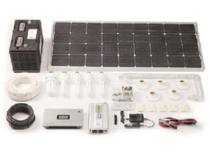
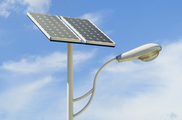
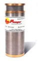
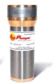
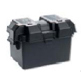
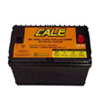
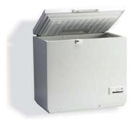
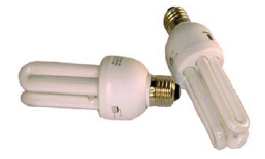
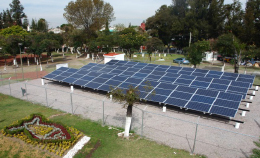
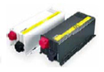

Catálogo
Equipo Solar
Aquí encontrará una muestra de nuestro equipo si desea que le enviemos el catálogo completo por favor comuníquese con nosotros.
{kind=link}
Módulos Fotovoltaicos Paneles Solares
Contamos con una amplia gama de productos :
Módulos Fotovoltaicos
Paneles Solares
Los módulos fotovoltaicos convierten la energía
luminosa del Sol en electricidad, esta es utilizada
de inmediato o almacenada en un banco de
baterías a través de un control de carga.
La electricidad puede ser convertida en corriente
alterna como la de la línea eléctrica por medio de
un inversor CD/CA.
Consulte con nuestros asesores Golden Harvest para la
selección adecuada de su control de carga.
- Contáctenos - tenemos una amplia gama de productos -
{kind=link}
Plantas Solares Plantas Eléctricas Solares de Iluminación
Sistemas diseñados para cubrir los servicios eléctricos básicos de una vivienda, tales como iluminación y electrodomésticos de bajo consumo como pudiera ser una TV, una licuadora, taladro de mano, etc, dependiendo del tamaño del mismo.
Plantas Solares
Plantas Eléctricas Solares de Iluminación.
Mientras más grande sea el panel solar, mayor energía
estará disponible para ser usada diariamente, consulte a su distribuidor Conermex para aplicaciones específicas.
Las Plantas Solares se envían como paquete con todos los accesorios necesarios para la instalación,
únicamente se requiere añadir una batería y un estante (este último es opcional).
La instalación es
sencilla, y se provee asesoría a solicitud del cliente.
- Contáctenos - tenemos una amplia gama de productos -
{kind=link}
Luminarias Solares
Las luminarias solares son una solución económica para iluminación pública en entornos sin red eléctrica.
Lamparas Solares
Luminarias solares autónomas
No sólo convencen por su fiabilidad y su larga vida útil sino también por su flexibilidad: no requiere tendido eléctrico y puede ser instalada en cualquier sitio, se instala rápidamente., lo único que se necesita es una base de concreto y un lugar bien soleado. No hay restricciones de aplicación ya que opera silenciosamente y es completamente compatible con la ecología del lugar donde se instalan. La operación y el mantenimiento de la luminaria solar se realizan al menor costo posible, no hay pagos por consumo eléctrico y su mantenimiento es casi nulo.
- Conozca mas sobre nuestras luminarias -
Bombas de Agua Solares
Contamos con una amplia gama de productos :
Bomba de Agua
Bombas de Diafragma Superficiales:
son bombas autocebantes que se utilizan en manantiales poco profundos en donde la succión no supera los 5 metros.

Bombas de Diafragma Sumergibles:
Ideal para pozos perforados o a cielo abierto.
Bombas Centrífugas Sumergibles: Este tipo de bombas se usa en donde los requierimientos de agua llegan hasta 200 metros cúbicos diarios (manantiales poco profundos) o en pozos en donde el agua se encuentre hasta 120 metros de profundidad.
- Contáctenos - tenemos una amplia gama de productos -
Baterías Estantes para Baterías
Los estantes de baterías ofrecen una imagen profesional y un uso confiable de su batería en la instalación de su sistema solar.
Baterías
Estantes para Baterías.
Las baterías almacenan la energía proveniente de los módulos solares para que pueda ser usada durante la noche, su tamaño es determinado por los períodos de nublados esperados. Las baterías que aquí se presentan son de plomo ácido en dos versiones: electrolito líquido (abiertas y cerradas) y de electrolito inmovilizado (gel) para aplicaciones que requieran muy bajo mantenimiento.

Baterías
Estantes para Baterías
El tiempo de vida de una batería depende de la profundidad de régimen carga-descarga (ciclado), es por ello que el tamaño de banco de baterías es determinante en su vida útil. Consulte con su asesor Conermex para elegir para seleccionar la mejor relación costo-desempeño-vida del banco de baterías que su sistema requiere.
- Contáctenos - tenemos una amplia gama de productos -
Refrogerador Solar
Estos refrigeradores de alta eficiencia tienen un consumo de energía excepcionalmente bajo. Esto permite utilizar un arreglo solar y un banco de baterías pequeños minimizando así considerablemente los costos del equipo por concepto de generación de energía.
. Características
* Opera a 12 o 24 V CD con desconexión de bajo voltaje automático (para protección de batería).
* Ecológico, no contiene CFCs. Usa refrigerante R-134
* Robusto, resistente a rayones, exterior de acero galvanizado.
* Interior de Aluminio, fácil de limpiar
* Sistema patentado de baja producción escarcha
* Control automático con termostato ajustable
* Modificable a modo "congelador" sin cargo extra (esta opción consume más energía).
- Contáctenos - tenemos una amplia gama de productos -
Lámparas Accesorios de corriente directa
Accesorios de corriente directa

En Golden Harvest contamos con excelentes opciones de lámparas para sus diferentes necesidades de iluminación,
permíta que alguno de nuestros expertos le asesore para su mejor selección.
Nuestra amplia variedad de lámparas Golden Harvest ofrece altos niveles de iluminación con bajos
- Contáctenos - tenemos una amplia gama de productos -
{kind=link}
Sistemas Interconectados a la Red Pública

Sistemas Interconectados a la Red Pública
Desde 2007 la legislación mexicana permite a cualquier usuario residencialo comercial del sistema eléctrico nacional el generar su propia electricidad, mediante el uso de sistemas solares, interconectándose a la misma red eléctrica para intercambiar energía con ella. El límite es 10 KW en uso residencial y 30 KW en uso comercial, con lo cual se abre la posibilidad a cualquier ciudadano de contribuir con su generación, desde una fracción hasta la totalidad de su consumo eléctrico, pagando a la compañía eléctrica únicamente la porción de energía no generada por el Sol.
- Contáctenos - tenemos una amplia gama de productos -
Inversores para sistemas aislados
Inversores para sistemas aislados

Inversores para sistemas aislados
Los Inversores Conermex son muy eficiencientes y están
diseñados para trabajar por largos periodos de tiempo.
Tienen aplicación en sistemas de plantas solares autónomas
e híbridas, sistemas de telecomunicaciones, sensores
remotos, sistemas de bombeo, protección catódica, etc.